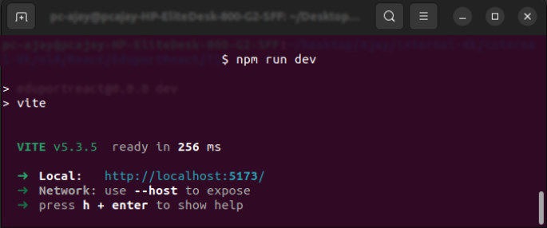

Vite
Learn how to use the npm scripts included with Eduport to build, compile source code, and more.
Vite is a local development server, It has support for TypeScript. It uses Rollup and esbuild internally for bundling. Please follow the below steps to install and setup all essentials:
1. Install node
In order to use Vite, you will need to download Node JS. If you don't have Node installed in your system, Please download the stable version of Node.js (LTS) NOT the latest.
Download Node JS2. Install NPM modules
First, change the command line path into your project where package.json is located.
Once the path of your command line is changed to project folder, run the following command. It will install all the dependencies listed in package.json file.
npm install
It might take a couple of minutes depends on your Internet connection. After successful
completion of npm install command, you will be able to see node_modules folder
that npm created (Please refer to attached screenshot for final folders your project will contain).
Everything is now installed and ready to go!
4. Running Vite
Now you're ready to start building new pages. All you have to do is run "npm run dev" in Terminal. This will track all the files in your project directory and start a local development server.
npm run dev

4. Creating Build for Production
After you're done with changes, for production and deployment you'll need to create build which you can put on server. The command for creating production build is given below
npm run build
After running the above command, you will need to wait until the production build is
generated, the process could take a while, depending on the performance of your system. After the
build is generated, you will see something similar to below terminal screenshot. And a folder named
dist will be generated in your project's directory. You can always customize the name of
build folder later through your vite.config.ts file.